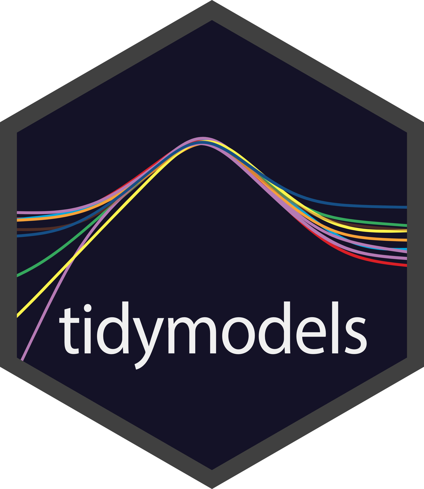
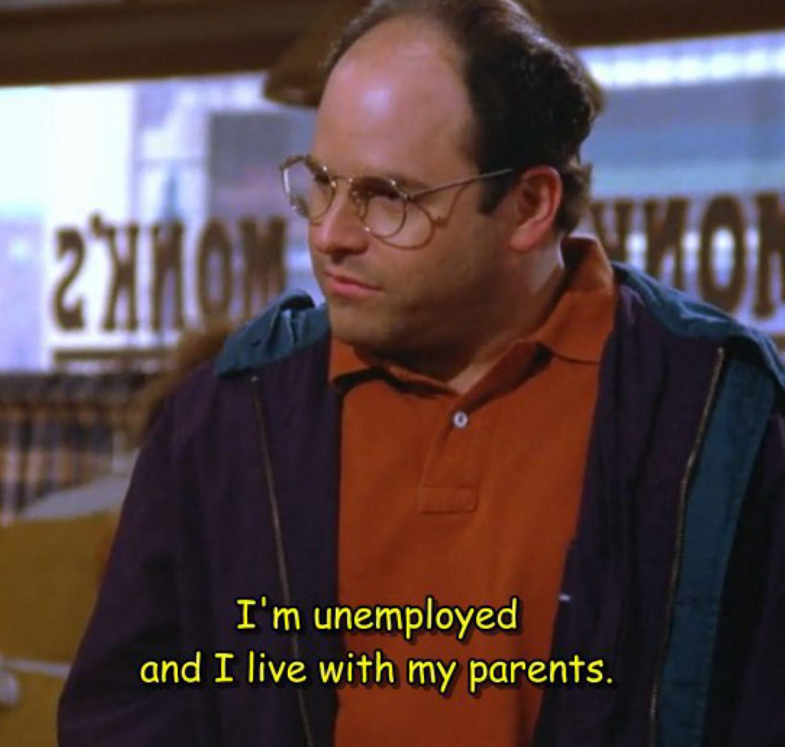

Brief Experience In Learning Tidymodels
Hello R-users!
What’s the deal with tidymodels?
It sounds complex and overwhelming at first. After some experience with it, it still feels like that. It’s a heap of new system to struggle through to model ML.

Why would you want to get through that instead of facing each ML engine one on one? Why not when you simply need random forest, you reach out for ranger, or when you need linear regression, you reach out for the good old lm() in base R?
Tidymodels supposedly offers a uniform syntax to interface with various ML engines. When you deal with them without tidymodels, you are against various different syntaxes, and you need to deal with their unique parameters and functions. With tidy models these things are streamlined. No matter what engine you face, you can use the tidymodels configuration.
But does it really work as you expect? Mostly.
But not all the time. Those unique characteristics from the original ML engines does not covered completely. They show their face usually when you try to tune them.
Also, when something crapped on your code, it’s a bit harder to identify the problem, since modeling with tidymodels involved multiple layers chained together. Is the problem in the engine set up? Or is it the tuning grid? Perhaps, the recipe? Or the workflow set?
Most of my brief experience with tidymodels are like this:
- My multiple models failed to work
- I decided to scrap the multiple models in the workflow set
- Tried it on 1 model 1 workflow approach
- Eventually found out and solved the problem
- Naively thought that this time I could make the multiple models work
- The multiple models failed to work … again
- repeat until #6 changed to #8
- The multiple models worked
Sometimes I wonder if I could save more time just doing each model one at a time instead of struggling to make the multiple models work.
Maybe, the problem is really not with tidymodels, but with my lack of … everything.
In short, I don’t know.
Maybe if you have to deal with multiple ML engines frequently, tidymodels is worth your effort. Yeah you should learn it, especially if you have a good grasp on general programming skills with R and you like Tidyverse.
What about my frustrating experience with tidymodels? Probably doesn’t count. Yes It was frustrating, but also quite fun. Also, in my context, I’m just learning on my own. I ain’t using tidymodels for actual work, cause:
